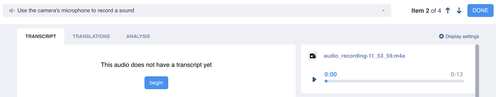
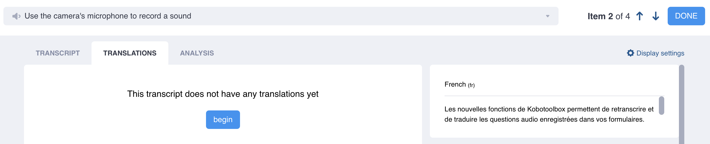

Search the knowledge base, browse our resources, and visit our forum for more detailed information
Read in English | Lire en français | Leer en español آخر تحديث: 13 سبتمبر 2025
تساعدك أدوات معالجة اللغة الطبيعية في KoboToolbox على جمع البيانات النوعية وإدارتها وتحليلها بشكل أكثر فعالية. تتضمن هذه الأدوات النسخ التلقائي من الصوت إلى النص والترجمة الآلية، مع التحليل النوعي الآلي القادم قريبًا. يتم إضافة النسخ الأصلي لملفاتك الصوتية وجميع النصوص المترجمة كأعمدة بيانات جديدة في جدول البيانات ويمكن تنزيلها جنبًا إلى جنب مع بيانات الاستبيان الخاصة بك.
لاستخدام هذه الميزات، قم أولاً بجمع الردود الصوتية في النموذج الخاص بك باستخدام نوع سؤال الصوت أو التسجيلات الصوتية في الخلفية.
ملاحظة: قد لا يتوفر النسخ والترجمة التلقائية لجميع اللغات. بالنسبة لهذه اللغات، يمكن فقط النسخ والترجمة اليدوية.

لبدء نسخ ردودك الصوتية:
افتح مشروعك وانتقل إلى DATA > Table.
انقر على زر Open بجوار الرد الصوتي الذي ترغب في نسخه.
في علامة التبويب TRANSCRIPT، انقر على begin.
حدد اللغة الأصلية للملف الصوتي وخيار automatic (سيسمح لك خيار manual بنسخ التسجيل الصوتي يدويًا).
انقر على create transcript لبدء النسخ التلقائي.
بمجرد اكتمال النسخ، يمكنك تحريره يدويًا. يمكنك تشغيل التسجيل الصوتي في الزاوية العلوية اليمنى للمساعدة في التحقق من دقة النسخ.
بعد تحرير النسخ، انقر على زر Save للتأكد من حفظ عملك بأمان.
عند الانتهاء، إما انقر على DONE للخروج، أو انتقل إلى الإرسال التالي بالنقر على الأسهم بجوار زر DONE، أو انتقل إلى علامة التبويب TRANSLATIONS.
إذا نقرت على DONE، سيتم نقلك مرة أخرى إلى عرض جدول البيانات، حيث سيتم إضافة عمود جديد يحتوي على النسخ.
ملاحظة: يجب حفظ النسخ والترجمات التي تم إنشاؤها تلقائيًا لمنع فقدان البيانات. الانتقال بعيدًا عن الصفحة دون الحفظ سيؤدي إلى فقدان البيانات.

بمجرد أن يكون لديك نسخ مكتمل لردك الصوتي، يمكنك إضافة ترجمات إلى لغات متعددة:
انتقل إلى علامة التبويب TRANSLATIONS.
خيار الترجمة متاح فقط بعد اكتمال النسخ.
انقر على begin واختر لغة الترجمة.
انقر على automatic للترجمة الآلية (سيسمح لك خيار manual بترجمة النسخ يدويًا)
انقر على create translation لبدء الترجمة التلقائية
بمجرد اكتمال الترجمة، يمكنك تحريرها يدويًا. يظهر النسخ الأصلي على يمين الشاشة، ويظهر الصوت الأصلي أسفله.
بعد تحرير الترجمة، انقر على زر Save للتأكد من حفظ عملك بأمان.
عند اكتمال الترجمة، يمكنك إضافة ترجمة أخرى بالنقر على new translation، أو الانتقال إلى الإرسال التالي بالنقر على الأسهم بجوار رقم العنصر في الزاوية العلوية اليمنى، أو النقر على DONE للعودة إلى جدول البيانات.
ملاحظة: يمكن أن تحتوي الملفات الصوتية على نسخ واحد فقط، ولكن يمكن أن يكون لكل نسخ ترجمات متعددة.
تدمج ميزات معالجة اللغة الطبيعية هذه قدرات التعرف التلقائي على الكلام (ASR) والترجمة الآلية (MT) التي توفرها Google Cloud Compute، والتي تقدم حاليًا النسخ التلقائي بـ 72 لغة (مع 138 متغيرًا إقليميًا) والترجمة التلقائية بـ 106 لغة. للنسخ أو الترجمة اليدوية، يمكنك الاختيار من بين حوالي 7000 لغة بناءً على قائمة ISO 639-3 الشاملة، التي تحتفظ بها SIL International (مصفاة حسب "اللغات الحية"). إذا كانت اللغة تدعم ASR أو MT، يمكنك الاختيار بين الطرق manual و automatic. بالنسبة للغات الأخرى، الطريقة manual فقط متاحة.
إذا لم تتمكن من العثور على لغة في القائمة، ففكر في التهجئات أو الأسماء البديلة. جميع أسماء اللغات مدرجة حاليًا باستخدام أسمائها الإنجليزية والتهجئة (على سبيل المثال، Spanish بدلاً من Español). بالنسبة للغات ذات عدد أقل من المتحدثين، قد تكون هناك أسماء بديلة. على سبيل المثال، لغة بورا في شمال نيجيريا مدرجة باسم Bura-Pabir ولكنها معروفة أيضًا باسم Bourrah أو Babir.
ملاحظة: عند نسخ الردود الصوتية يدويًا، من المهم اختيار اللغة الصحيحة. إذا لم يتطابق النسخ الذي تم إنشاؤه يدويًا بدقة مع اللغة أو المنطقة المختارة، فقد تكون الترجمات التلقائية اللاحقة باستخدام هذا النسخ غير صحيحة وتنتج عدم دقة.
Did you find what you were looking for? Was the information clear? Was anything missing?
Share your feedback to help us improve this article!
KoboToolbox is maintained by Kobo Inc.